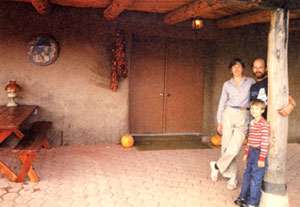
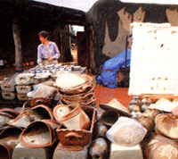
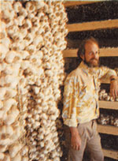

A former Californian adapts to life in Yavapai.
Molly and I had gotten the organic-homestead bug in Santa Barbara, and we wanted to live on some beautiful, remote acreage as self sufficient potters and gardeners. We knew we'd need money and more skills to make it, so we looked for jobs and were lucky enough to find one at a community college in Prescott. We put our savings into a house on an acre in Chino Valley, a tiny farm town 16 miles north of the college, and settled in to learn the area.
Initially, we didn't like what we found: The growing season was short, the wind was incessant, salaries were low (especially for women), and the whole place seemed to be about 15 years behind progressive, innovative, youthful Santa Barbara.
We quickly returned to the West Coast, bought 16 acres in Northern California, and began commuting 1,000 miles, one way, for two years to do basic development work on our beautiful, remote, little hollow. We came to know the problems there, too: the cold, the distance from urban markets, the heavy competition, and the high costs. This taught us a valuable lesson: No place is perfect! It's where your head and heart (not your body) are that counts. In the end, we sold the California place and made our stand on five acres in Arizona, determined to create our own environment.
Our place is not remote, green, and spectacular in the same way we'd dreamed it would be, but it's plenty good enough. We've built a nice solar homestead/minifarm surrounded by dense evergreens and good neighbors. I've graduated from the college job, and we are now reasonably self-reliant. We're close to a good school, a small town, and growing markets for our pottery, garlic, and solar businesses.
We have grown and evolved with the town, and the future looks to hold more of the same. Population growth has brought the usual mixture of good and undesirable changes, but on the whole, the social environment has improved.
The Chino climate is great, and the air is clean. We're at 5,000 feet and have four seasons. The growing season is 120 days (May 15 to September 15), and we can raise nearly any vegetable we want on a homegarden scale. Our sweet corn will knock your socks off! Insect problems are minimal, and there are few biting bugs, a fact which makes summer evenings outdoors a starry pleasure. However, fruit is difficult to grow. Mature apples and pears are pretty reliable but not commercially feasible; apricots are a one-in 20 shot. The warm spring days make the trees flower early, then the cold, dry, highplains nights initiate our annual rite: The Death of the Fruit Blossoms. (Want to trade fruit for homegrown corn and garlic?)
Water is a key resource that's now tightly controlled. The water table is dropping steadily, and if you don't have early-priority grandfather water rights, you may be limited to irrigating only one-half acre in some areas-and, in this region, you have to irrigate everything almost all the time. Soils are alkaline and need lots of organic matter and mulching for water conservation, pH control, and protection from the sun.
All in all, northern Arizona has treated us very well, and we want to return the favor by enjoying and preserving this place and by contributing what we can to improving life here for everyone.
sIf you decide to come here, be prepared, be adaptable, and be kind and you'll be welcomed.
|
 |
 |
 |